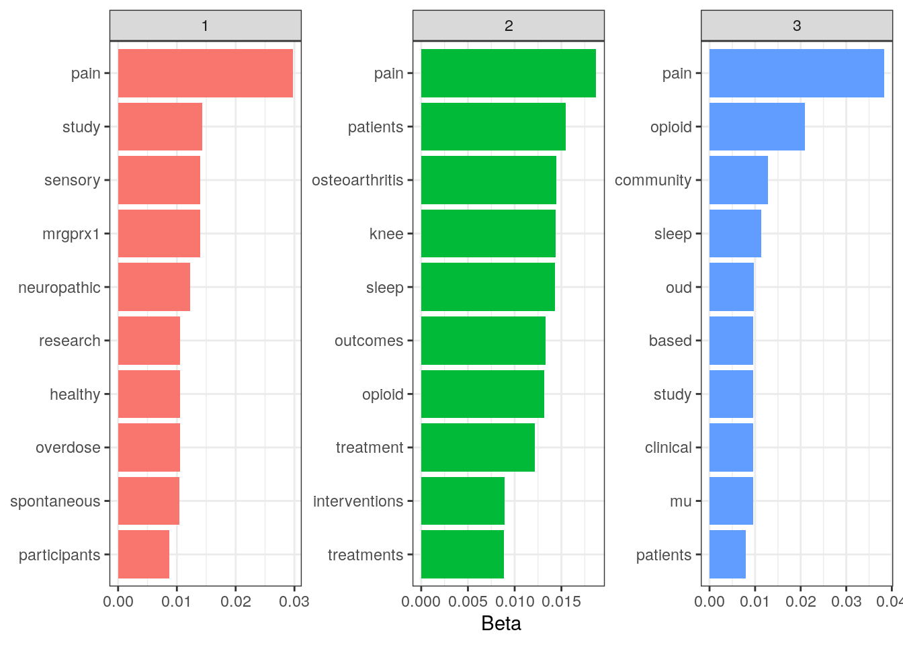
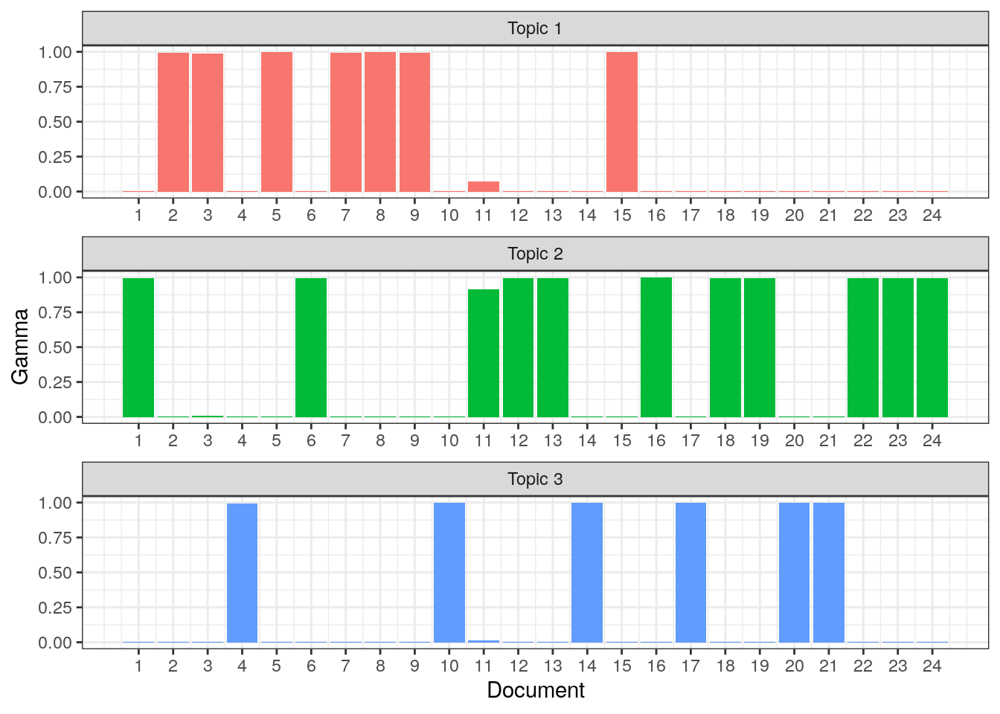
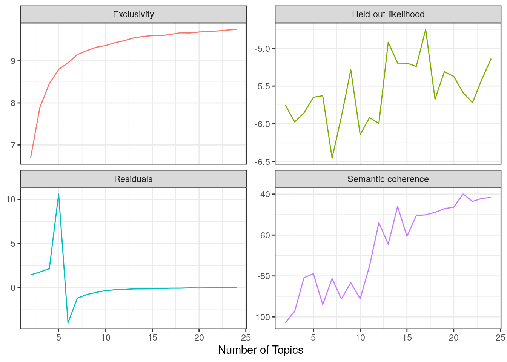
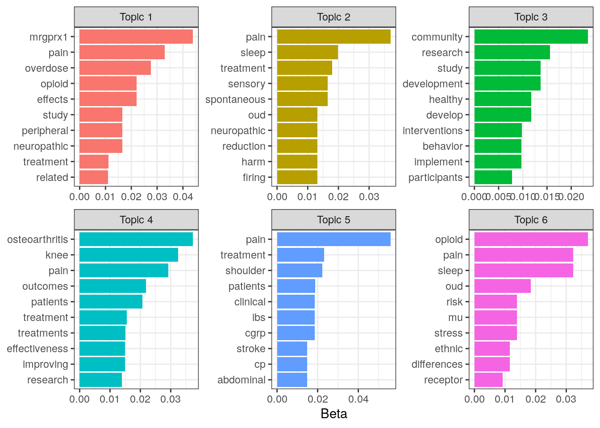

pacman::p_load(tidyverse, tidytext, stm, knitr)Topic Modeling with R
Introduction
For this project I’ll be showing a quick example of how to perform topic modeling with R using the Tidytext format introduced by Julia Silge and David Robinson in their “Text Mining with R! A Tidy Approach”. And I’ll be using abstracts submitted by Johns Hopkins University for funding to the NIH HEAL Initiative. The list of funded projects can be found at https://heal.nih.gov/funding/awarded. A benefit of using this data is that it doesn’t require much cleaning as Twitter text might. For the purposes of this demonstration I won’t do any data cleaning. The objective will be to find the optimal number of topics to which to attribute the abstracts. I’ll be using the tidyverse and tidytext packages for wrangling, the stm package for modeling, the janitor package for cleaning column names (but I won’t load it because I’m only going to use it once), the knitr package for table formatting, and the pacman package to load my packages (also only used once).
Downloading the abstract data
I’ll start by downloading the data and just looking at the dimensionality.
jh_data <- read_csv(
"https://heal.nih.gov/funding/awarded/export?combine=johns%20hopkins&_format=csv"
)Rows: 26 Columns: 10
── Column specification ────────────────────────────────────────────────────────
Delimiter: ","
chr (9): Project #, Project Title, Research Focus Area, Research Program, Ad...
dbl (1): Year Awarded
ℹ Use `spec()` to retrieve the full column specification for this data.
ℹ Specify the column types or set `show_col_types = FALSE` to quiet this message.colnames(jh_data) [1] "Project #" "Project Title" "Research Focus Area"
[4] "Research Program" "Administering IC(s)" "Institution(s)"
[7] "Investigator(s)" "Location(s)" "Year Awarded"
[10] "Summary" It looks like there are 26 columns in the data. I’m going to clean up the column names and select only the Project # (to use as an identifier), Project Title, and Summary.
jh_clean <- jh_data %>%
janitor::clean_names() %>%
select(project_number, project_title, summary)
head(jh_clean, 3) %>% kable(booktabs = TRUE)| project_number | project_title | summary |
|---|---|---|
| 1R01DA057655-01 | Implementing and Evaluating the Impact of Novel Mobile Harm Reduction Services on Overdose Among Women who use Drugs: The SHOUT Study | This project will evaluate a previously developed harm reduction intervention that addresses the needs of women who use drugs in an urban environment. The approach uses a mobile van to offer naloxone, fentanyl test strips, and other harm reduction supplies – along with necessities such as food and clothing, brief trauma-informed counseling, and referrals to drug treatment, medical care, and social services. This research aims to test the impact of an intervention that may increase access to harm reduction services for women, as well as assess how to put it into place. |
| 1R01DA057673-01 | The Short and Long-Term Dynamics of Opioid/Stimulant Use: Mixed Methods to Inform Overdose Prevention and Treatment Related to Polysubstance Use | Use of both opioids and stimulants is increasing, but little is known about how polysubstance use evolves over time and how it influences overdose risk. This project will use data from two groups at high risk for overdose: i) participants in the AIDS Linked to the IntraVenous Experience (ALIVE) study who inject drugs and ii) participants in the new Stimulant Opioid Non-Injection Cohort (SONIC) study. This research will identify drug use patterns and their association with treatment and overdose over time – toward informing overdose prevention efforts and interventions to improve the U.S. opioid crisis. |
| 1R61AT012279-01 | Quantifying and Treating Myofascial Dysfunction in Post Stroke Shoulder Pain | Shoulder pain occurs in many patients who are recovering from a stroke. In addition to impairments in the ability to move, persistent shoulder pain contributes to depression, and often reduces quality of life. Although the cause of post-stroke shoulder pain is complex and not completely understood, it is thought to arise in part to damage of muscles and surrounding connective tissues (myofascial tissues) in the shoulder. This project will use advanced medical imaging techniques to create biomarkers of that can reliably identify myofascial tissues. The research will then test the ability of these biomarkers to monitor, and ultimately predict treatment responses in patients with post-stroke shoulder pain in the context of a randomized controlled clinical trial. |
Tidy the data
In this next step I’m going to tidy the data and remove stop words. Then I’ll take a look at word frequencies and TF-IDF metrics to get an idea of what I might expect from my model.
I’m first going to use the tidytext::unnest_tokens() function to tokenize the data by single word then remove stop words from the text. I’ll also get word frequencies in this one step. Also, I’m going to drop the project title for the time being, but I’ll bring it back later.
jh_tidy <- jh_clean %>%
mutate(summary = str_c(project_title, summary, sep = " ")) %>%
select(-project_title) %>%
unnest_tokens(word, summary, token = "words") %>%
anti_join(stop_words, by = "word") %>%
count(project_number, word)
jh_tidy %>% arrange(-n) %>% head(10)# A tibble: 10 × 3
project_number word n
<chr> <chr> <int>
1 1RF1NS113883-01 pain 9
2 3R01MD009063-05S1 pain 9
3 1UG3NS115718-01 mrgprx1 8
4 1U01HL150568-01 sleep 7
5 1U01HL150835-01 sleep 7
6 1R61AT012279-01 shoulder 6
7 1U01HL150835-01 stress 6
8 1UG3DA048734-01 sleep 6
9 1UG3NS115718-01 pain 6
10 3R01MD009063-05S1 opioid 6The words “pain” and “spontaneous” are 2 of the more frequently occurring words in document 1RF1NS113883-01 and the words “pain” and “sleep” seem to be 2 of the most frequent across documents. Let’s see how these words do in terms of how important they are in distinguishing a document from other documents.
I’m going to add TF-IDF metrics using the tidytext::bind_tf_idf() function.
jh_tfidf <- jh_tidy %>% bind_tf_idf(word, project_number, n)
jh_tfidf %>%
arrange(-tf_idf) %>% head(15)# A tibble: 15 × 6
project_number word n tf idf tf_idf
<chr> <chr> <int> <dbl> <dbl> <dbl>
1 3U24TR001609-04S1 tin 1 0.333 3.26 1.09
2 3U24TR001609-04S1 summary 1 0.333 2.56 0.855
3 3U24TR001609-04S1 supplement 1 0.333 2.16 0.720
4 1R61HL156248-01 intranasal 1 0.125 3.26 0.407
5 1R61HL156248-01 leptin 1 0.125 3.26 0.407
6 1R61HL156248-01 induced 1 0.125 2.56 0.321
7 1R61HL156248-01 respiratory 1 0.125 2.56 0.321
8 1R61HL156248-01 summary 1 0.125 2.56 0.321
9 1R61AT012279-01 shoulder 6 0.0833 3.26 0.272
10 1R61HL156248-01 depression 1 0.125 2.16 0.270
11 1RF1AG068997-01 bone 3 0.0698 3.26 0.227
12 1R01DA057655-01 harm 4 0.0667 3.26 0.217
13 1R01DA057655-01 reduction 4 0.0667 3.26 0.217
14 1UG3NS115718-01 mrgprx1 8 0.0656 3.26 0.214
15 1R01DK123138-01 cgrp 5 0.0602 3.26 0.196It’s very strange that 2 documents have the term “summary” as the only term in the summary. This is indicated by a term frequency (tf) of 1. Let’s take a look at the original text for these documents.
jh_clean %>%
filter(
project_number %in% c("1R61HL156248-01", "3U24TR001609-04S1")
) %>%
select(project_number, summary)# A tibble: 2 × 2
project_number summary
<chr> <chr>
1 1R61HL156248-01 no summary
2 3U24TR001609-04S1 no summaryThere was no summary for either of these documents! The word “summary” had a really high TF-IDF because it was the only word (“no” is a stopword and was dropped) in these documents and it likely isn’t used very frequently in other documents. This is one of the benefits of doing this kind of check before going into modeling. Interestingly, though, neither “pain” nor “stress” are in the terms with the top 15 TF-IDF values. I imagine it’s because these words occur in a lot of the documents and, therefore, would not be very useful in distinguishing one project from another. So I’ll drop the two project with no summaries and go into the modeling.
jh_tidy <- jh_tidy %>%
filter(
!project_number %in% c("1R61HL156248-01", "3U24TR001609-04S1")
)Modeling
To be able to perform text mining of any kind, including structural topic modeling, I first need to put my data into a sparse matrix. For this I’ll use the tidytext::cast_sparse() function.
jh_sparse <- jh_tidy %>% cast_sparse(project_number, word, n)
dim(jh_sparse)[1] 24 955I now have a matrix of 24 and 955 columns. There is now one column for each distinct word in my corpus of data. I’m going to create a structural model with 3 topics (number chosen arbitrarily) just to get an idea of how I might evaluate a model. I’m going to use the stm::stm() function and use the LDA algorithm to generate my model.
jh_lda_3 <- jh_sparse %>% stm(K = 3, init.type = "LDA", seed = 212)Now I want to see what some of the most frequently occurring words are within each topic. For this I’m going to simply use the tidy method from stm on the model. By default, the tidy method extracts values of “beta” which tells us the probability that a word comes from a given topic.
jh_lda_3 %>%
tidy() %>%
group_by(topic) %>%
slice_max(beta, n = 10, with_ties = FALSE) %>%
ungroup() %>%
ggplot(aes(reorder_within(term, beta, topic), beta, fill = factor(topic))) +
geom_col(show.legend = FALSE) +
scale_x_reordered() +
labs(y = "Beta", x = NULL) +
facet_wrap(~ topic, scales = "free") +
coord_flip() +
theme_bw()
The word “pain” is the most frequently occurring word in each topic and the word “opioid” occurs in the top 10 words of 2 of the topics. It looks like the model’s not doing a great job of separating topics based on this.
Another interesting metric to look at is “gamma” which is the probability that a given document is related to a given topic and this is also provided by our model output, which we can access by specifying the matrix = "gamma" argument in our tidy() function.
jh_lda_3 %>%
tidy(matrix = "gamma") %>%
mutate(topic = str_c("Topic", topic, sep = " ") %>% factor()) %>%
ggplot(aes(document, gamma, fill = topic)) +
geom_col(show.legend = FALSE) +
scale_x_continuous(breaks = 1:nrow(distinct(jh_tidy, project_number))) +
facet_wrap(~ topic, scales = "free", ncol = 1) +
labs(x = "Document", y = "Gamma") +
theme_bw()
It looks like each document has a high probability of coming from only 1 topic. This is pretty good considering what the beta values showed.
Next I’ll see if there’s a better number of topics to separate these documents into.
Choosing a number of topics
First I’m going to build a set of LDA models with values of K (number of topics) ranging from 2 to 24. I’m also going to create a holdout dataset to calculate the heldout-likelihood metric later. This is somewhat akin to using a cross-validation holdout set in other machine learning methodologies.
jh_tune_models <- tibble(k = 2:24) %>%
mutate(
lda_mod = map(
k,
~ stm(jh_sparse, K = .x, init.type = "LDA", seed = 212)
)
)
heldout <- make.heldout(jh_sparse)Now I’m going to extract the metrics that I want to use to evaluate my model. I’m going to focus on the approach of find the value of K with highest held-out likelihood and lowest residual, but I’m also interested in looking at semantic coherence and exclusivity metrics, so I’ll keep those as well.
jh_tune_results <- jh_tune_models %>%
mutate(
exclusivity = map(lda_mod, exclusivity),
semantic_coherence = map(
lda_mod,
semanticCoherence,
documents = jh_sparse,
M = 10
),
eval_heldout = map(lda_mod, eval.heldout, heldout$missing),
residual = map(lda_mod, checkResiduals, jh_sparse)
)jh_tune_results %>%
transmute(
k,
Residuals = map_dbl(residual, "dispersion"),
`Semantic coherence` = map_dbl(semantic_coherence, mean),
`Held-out likelihood` = map_dbl(eval_heldout, "expected.heldout"),
Exclusivity = map_dbl(exclusivity, mean)
) %>%
pivot_longer(-k, names_to = "metrics", values_to = "value") %>%
ggplot(aes(k, value, color = metrics)) +
geom_line(show.legend = FALSE) +
labs(x = "Number of Topics", y = NULL) +
facet_wrap(~ metrics, scales = "free_y") +
theme_bw()
The highest held-out likelihood score comes from the model with K = 17 and the lowest residual comes from the model with K = 6. However, the model with K = 17 also has a relatively low residual whereas the model with K = 6 has the lowest held-out likelihood. Based on this, it looks like the 17-topic model is best. This model also has relatively high semantic coherence and exclusivity. Notably, exclusivity and the residual seem to flatten out and semantic coherence increases dramatically at K > 10.
Now I’m going to look at both the K = 6 and K = 17 models to see whether one is clearly better. I’m going to start by looking at how easily each model would predict each document to belong to a specific topic. For that, I’m going to look at the maximum values of gamma for each document. For comparison I’m going to show the same plot for the approach of maximizing semantic coherence (K = 21).
jh_tune_models %>%
filter(k %in% c(6, 17, 21)) %>%
mutate(
max_gammas = map(
lda_mod,
~ tidy(.x, matrix = "gamma") %>%
group_by(document) %>%
summarise(gamma = max(gamma), .groups = "drop")
),
k_label = str_c("Number of Topics:", k, sep = " ") %>% fct_reorder(k)
) %>%
select(-lda_mod) %>%
unnest(max_gammas) %>%
ggplot(aes(document, gamma, fill = factor(k))) +
geom_col(show.legend = FALSE) +
scale_x_continuous(breaks = 1:24) +
labs(x = "Document", y = "Maximum Gamma") +
facet_wrap(~ k_label, ncol = 1) +
theme_bw()
It looks like separating the documents into 17 topics yields relatively high probabilities of corresponding to specific topics across the board, whereas separating the documents into 6 topics gives a max probability of less than 75% of document 1 belonging to a specific topic. If I’m interested in parsimony, K = 6 isn’t so bad, but if I’m more interested in accuracy I’d go with K = 17. Looking at the 21-topic model – the model with highest semantic coherence – the maximum probabilities of belonging to a singular, specific topic are relatively low for documents 20 and 21.
Finally, using the 6-topic model, I’d like to see how the titles of the projects grouped by topic.
For the purposes of visualization I’ll look at the top words defining the topics for the 6-topic model.
jh_tune_models %>%
filter(k == 6) %>%
pluck("lda_mod", 1) %>%
tidy() %>%
group_by(topic) %>%
slice_max(beta, n = 10) %>%
ungroup() %>%
mutate(topic = str_c("Topic", topic, sep = " ")) %>%
ggplot(aes(reorder_within(term, beta, topic), beta, fill = factor(topic))) +
geom_col(show.legend = FALSE) +
scale_x_reordered() +
labs(y = "Beta", x = NULL) +
facet_wrap(~ topic, scales = "free") +
coord_flip() +
theme_bw()
The word “pain” appears in the top 10 words of all but topic 3 (in further analysis I might consider making this a stop word), but topic 4 seems to be about joint issues given the prevalence of the words “osteoarthritis” and “knee” and topic 2 seems to be about brain activity during sleep given the prevalence of the words “sleep”, “neuropathic”, “sensory”, and “firing” (neurons “firing”?).
Finally, I’ll look at the titles grouped by each project’s maximum gamma value. You be the judge 😊
jh_tune_models %>%
filter(k == 6) %>%
pluck("lda_mod", 1) %>%
tidy(matrix = "gamma") %>%
nest(data = -document) %>%
mutate(
data = map(data, ~ slice_max(.x, gamma, n = 1, with_ties = FALSE)),
project_number = rownames(jh_sparse)
) %>%
unnest(data) %>%
left_join(
jh_clean %>% select(project_number, project_title),
by = "project_number"
) %>%
select(topic, project_title, gamma) %>%
mutate(gamma = round(gamma, 3)) %>%
arrange(topic, gamma) %>%
kable(booktabs = TRUE)| topic | project_title | gamma |
|---|---|---|
| 1 | The Short and Long-Term Dynamics of Opioid/Stimulant Use: Mixed Methods to Inform Overdose Prevention and Treatment Related to Polysubstance Use | 0.987 |
| 1 | Development of MRGPRX1 positive allosteric modulators as non-addictive therapies for neuropathic pain | 0.993 |
| 2 | Mentorship of Junior Investigators on HEAL-SKOAP | 0.687 |
| 2 | Implementing and Evaluating the Impact of Novel Mobile Harm Reduction Services on Overdose Among Women who use Drugs: The SHOUT Study | 0.992 |
| 2 | Evaluating Suvorexant for Sleep Disturbance in Opioid Use Disorder | 0.994 |
| 2 | Sympathetic-mediated sensory neuron cluster firing as a novel therapeutic target for neuropathic pain | 0.996 |
| 3 | 7/24 Healthy Brain and Child Development National Consortium | 0.996 |
| 3 | DC Research Infrastructure Building & Initiative to Reach, Engage, and Retain in MOUD Patients with OUD | 0.997 |
| 3 | DC Research Infrastructure Building & Initiative to Reach, Engage, and Retain in MOUD Patients with OUD | 0.997 |
| 3 | HEALthy ORCHARD: Developing plans for a Baltimore site of the HEALthy BCD study | 0.998 |
| 3 | DEVELOPMENT & MALLEABILITY FROM CHILDHOOD TO ADULTHOOD | 0.998 |
| 4 | Subchondral Bone Cavities in Osteoarthritis Pain | 0.990 |
| 4 | A sequenced-strategy for improving outcomes in patients with knee osteoarthritis pain | 0.991 |
| 4 | A sequenced-strategy for improving outcomes in patients with knee osteoarthritis pain | 0.992 |
| 4 | Increasing Participant Diversity in a ’Sequenced-Strategy to Improve Outcomes in People with Knee Osteoarthritis Pain (SKOAP) | 0.992 |
| 4 | A sequenced-strategy for improving outcomes in patients with knee osteoarthritis pain | 0.994 |
| 4 | Social Networks among Native American caregivers participating in an evidence-based and culturally informed intergenerational intervention | 0.994 |
| 5 | Quantifying and Treating Myofascial Dysfunction in Post Stroke Shoulder Pain | 0.992 |
| 5 | Validation of peripheral CGRP signaling as a target for the treatment of pain in chronic pancreatitis | 0.993 |
| 5 | Home-based transcutaneous electrical acustimulation for abdominal pain | 0.994 |
| 6 | Evaluating the Role of the Orexin System in Circadian Rhythms of Sleep and Stress in Persons on Medication-Assisted Treatments for Opioid Use Disorder | 0.980 |
| 6 | UNDERSTANDING THE INTERSECTION BETWEEN OPIOIDS AND SUICIDE THROUGH THE SOUTHWEST HUB | 0.994 |
| 6 | Effects of experimental sleep disruption and fragmentation on cerebral Mu-opioid receptor function, Mu-opioid receptor agonist analgesia, and abuse liability. | 0.995 |
| 6 | ETHNIC DIFFERENCES IN ENDOGENOUS PAIN REGULATION: PET IMAGING OF OPIOID RECEPTORS | 0.995 |